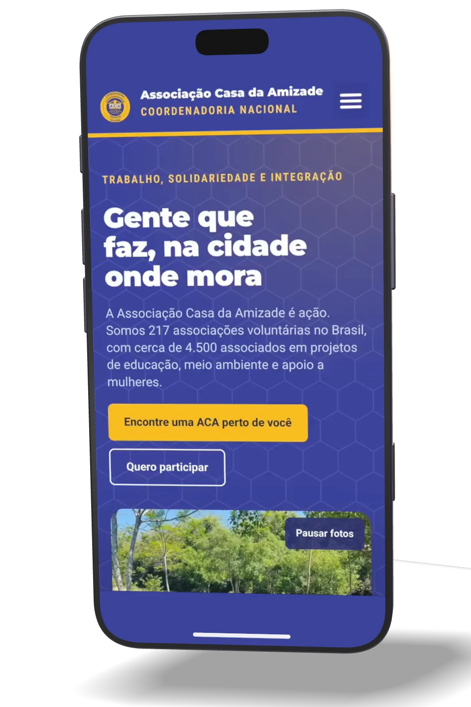

( Projeto )
CNACAB
Rede nacional de associações voluntárias · Brasil

O desafio
A Coordenadoria Nacional reúne as Associações Casa da Amizade do país, que trabalham com educação, meio ambiente e apoio a mulheres. Fazia alguns anos que a organização tentava manter um site que mostrasse esse trabalho, e as empresas procuradas antes não tinham atendido ao que ela esperava.
O site também tinha dois públicos: quem quer encontrar uma Casa da Amizade perto de onde mora e a associada que procura as publicações.
A solução
Construímos o site em WordPress com Elementor. A página inicial segue o que a visitante procura: a rede, os programas nacionais, a busca das Casas, as honrarias, as publicações e o contato.
A busca encontra a Casa pelo nome da cidade, com ou sem acento, ou pela coordenadoria regional. No celular, uma barra fixa deixa os dois caminhos sempre à mão: encontrar uma Casa e a Área da Associada.
Depois do lançamento, o site continua com a Bumavit no plano de manutenção.
Avaliação no Google
Nossa organização vinha há alguns anos com dificuldades para manter um site que expressasse o trabalho que fazemos. Buscamos algumas empresas, mas elas não conseguiram atender as nossas expectativas. Ao chegar a BUMAVIT fomos muito bem acolhidos e compreendidos. Nosso site atual corresponde totalmente ao que queremos e só temos a agradecer pelo cumprimento do prazo, facilidade de comunicação com o criador e respeito a nossa missão e princípios. Já contratamos a empresa para um outro site que com certeza será igualmente um sucesso. Gratidão!